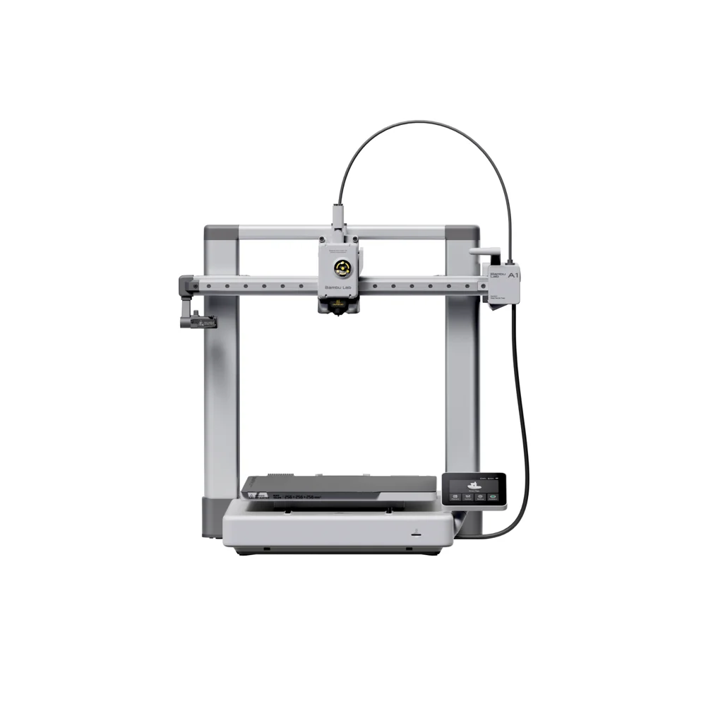
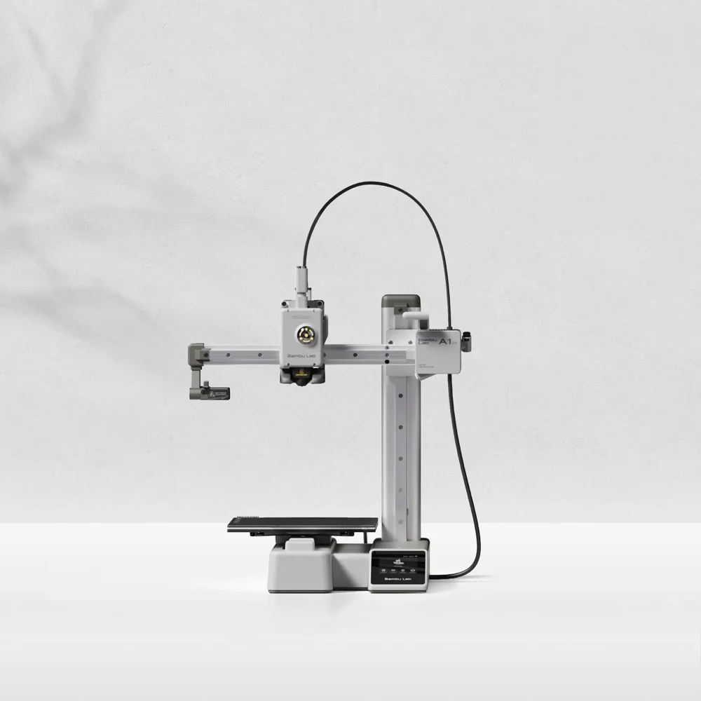
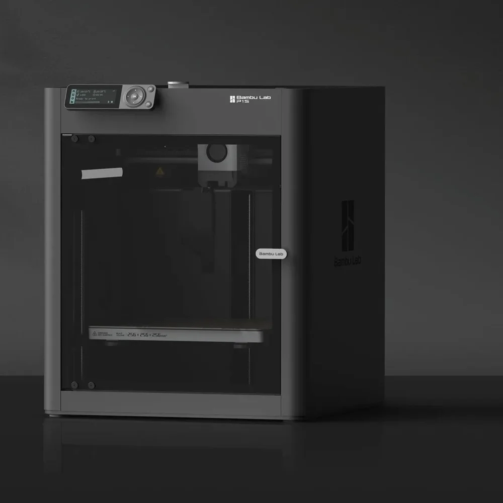
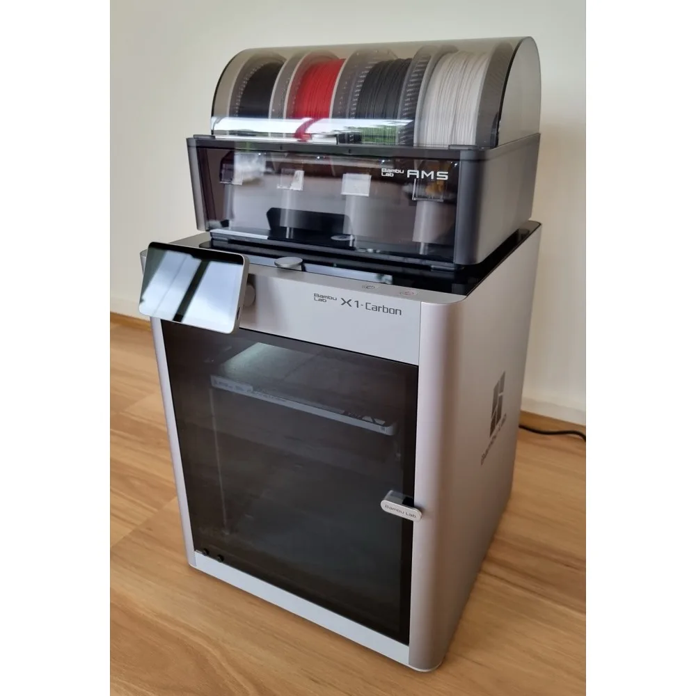
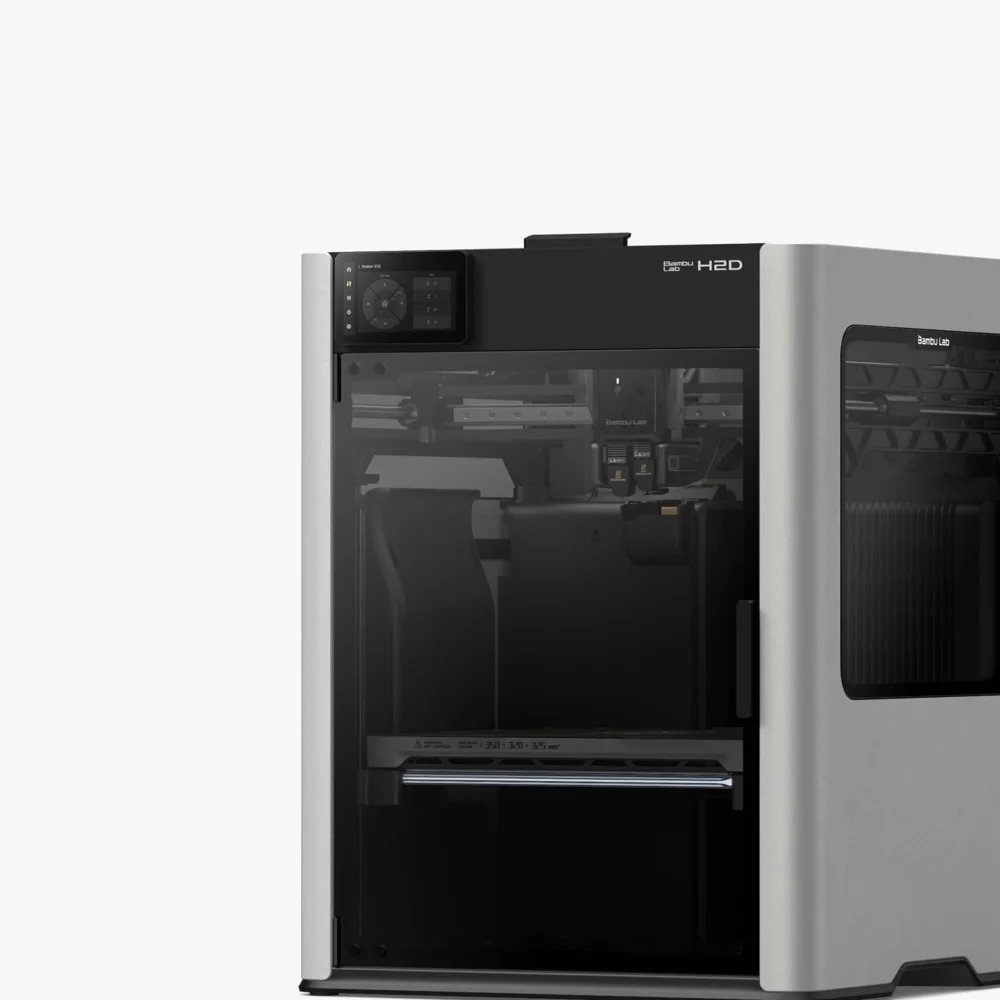

Servicios de impresión 3D y reparación
Además de vender filamento y compuesto térmico, tenemos taller independiente en Ciudad de México. Ahí reparamos impresoras Bambu Lab. También manejamos hotends y boquillas de repuesto e imprimimos piezas bajo pedido con filamento Emisha. La recepción de equipos se agenda en línea: lunes a viernes de 12:00 a 18:00.

Reparación de impresoras Bambu Lab
Primero revisamos el equipo (diagnóstico $300 MXN). Luego te pasamos la cotización y tú decides. La mano de obra es de precio fijo: $700 MXN, o $400 MXN si ya te hicimos el diagnóstico. Las refacciones van aparte y no ponemos ninguna sin que la autorices. Agenda aquí el día y la hora en que traes tu impresora.

Modelos que atendemos
Trabajamos toda la línea Bambu Lab. Desde las máquinas de cama móvil hasta los equipos cerrados de doble extrusor, con AMS conectado o sin él.





Foto de la X1 Carbon: Benlisquare, CC BY-SA 4.0, vía Wikimedia Commons.
Si tu modelo no aparece en la lista de arriba, escríbenos de todos modos por WhatsApp al +52 55 7563 9255 y con gusto te atendemos. Emisha es un taller independiente, no un centro de servicio autorizado por Bambu Lab.
Fallas más comunes
Así llegan la mayoría de las impresoras al taller. Si lo que te pasa se parece a alguno de estos casos, ya sabemos por dónde empezar.

Extrusor tapado
Filamento atorado, engranes que patinan o extrusión que va y viene. Desarmamos el conjunto, lo destapamos y revisamos todo el camino del filamento.
Así llega
Se oye clic-clic y a media pieza deja de salir material. Sigue moviéndose pero
imprime en el aire.

Hotend y termistor
Marca error de temperatura, calienta muy lento o la boquilla ya está dañada. Revisamos resistencia, termistor y conexiones. Con eso decidimos si se repara o se cambia.
Así llega
Se queda en 180 °C y ya no sube. Tarda un buen en calentar y a veces se cancela
sola con error de temperatura.

Cama y nivelación
No pega la primera capa, la nivelación automática falla o la cama quedó despareja. Revisamos el sensor, la superficie y el eje Z.
Así llega
De un lado pega bien y del otro las líneas ni se tocan. A media impresión se
despega la pieza y se hace bola.

Correas y ejes desalineados
Capas corridas, ghosting o ruido raro al moverse. Tensamos correas y revisamos poleas y rodamientos. Después corregimos la alineación de los ejes.
Así llega
La pieza sale como escalonada, con las capas recorridas de un lado, y la máquina
hace un ruido feo cuando se mueve rápido.

Fallas del AMS
El cambio de color se traba, el filamento no carga o el sensor no detecta la bobina. Atendemos el AMS y su comunicación con la impresora.
Así llega
Se traba en el cambio de color. Jala el filamento, lo regresa y ahí se queda
hasta que cancelo la impresión.

Electrónica, firmware y calibración
Placa o cableado dañado, actualización que se quedó a medias, equipo descalibrado. Lo revisamos y te lo entregamos imprimiendo.
Así llega
Se quedó a medias la actualización y ya no arranca. Tampoco se conecta al wifi
ni la ve la app.
Cómo funciona
-
Agenda tu cita en línea
En emisha.com.mx/reparacion eliges el día y la hora (lunes a viernes de 12:00 a 18:00) y nos cuentas el modelo y la falla. Si estás fuera de CDMX, escríbenos por WhatsApp para coordinar el envío.
-
Traes o mandas el equipo
Llegas al taller a tu hora con la impresora y su cable (hay valet parking), o la mandas por paquetería. La recepción toma unos 10 minutos.
-
Revisamos y te cotizamos
El diagnóstico cuesta $300 MXN. Te mandamos la cotización con la mano de obra y, si hacen falta, las refacciones.
-
Autorizas y reparamos
No cambiamos ni compramos ninguna pieza hasta que nos des el visto bueno.
-
Pruebas de impresión y entrega
Antes de entregarte el equipo hacemos impresiones de prueba. Así confirmamos que la falla quedó resuelta y que la máquina está calibrada.
Hotends y boquillas de repuesto
Manejamos hotends para la Bambu Lab A1 y A1 mini, y boquillas para la serie H2 (H2D, H2S y H2C), en cuatro diámetros. Te sirven para tener uno listo en el cajón el día que el de la máquina se tape o se dañe, y también para cambiar de diámetro según la pieza que vayas a imprimir.

Impresión 3D bajo pedido
Imprimimos lo que necesites en el taller. Piezas funcionales, prototipos para validar un diseño antes de mandarlo a producción, series cortas y refacciones que ya no consigues en ningún lado.
Imprimimos con filamento Emisha PLA y PETG de 1.75 mm, así que el color lo eliges del catálogo. El PLA va bien para piezas decorativas, maquetas y prototipos de interior. El PETG conviene si la pieza va a recibir golpes, calor o intemperie.
¿No tienes el modelo listo o el archivo necesita ajustes para imprimirse bien? Coméntanoslo por WhatsApp y lo revisamos contigo.
Qué necesitamos para cotizarte
Mándanos tu archivo por WhatsApp al +52 55 7563 9255 con estos datos y te cotizamos:
-
El archivo del modelo
En STL, STEP o 3MF. Si tienes varias versiones, mándanos la definitiva.
-
Material y color
PLA o PETG, y el color del catálogo que prefieras.
-
Cantidad
Cuántas piezas necesitas. Una sola o una serie corta.
-
Acabado
Dinos si la pieza lleva tolerancias apretadas, roscas funcionales o algún acabado superficial en particular.
No manejamos tarifa fija por gramo ni por hora. Cotizamos pieza por pieza, porque el tiempo de máquina y el material cambian según la geometría, el relleno y el acabado que pidas.
Preguntas frecuentes
¿Cuánto cuesta el diagnóstico?
El diagnóstico cuesta $300 MXN. Checamos el equipo, vemos qué está fallando y te pasamos la cotización antes de tocar nada.
Si autorizas la reparación, la mano de obra baja a $400 MXN, así que en total pagas los mismos $700 MXN. Si prefieres no reparar, solo pagas el diagnóstico y te devolvemos la impresora.
¿Qué incluye el precio de $700 MXN?
Los $700 MXN son la mano de obra cuando la falla se resuelve sin cambiar refacciones: desmontaje, limpieza y desobstrucción, ajustes mecánicos, calibración y pruebas de impresión antes de entregarte el equipo.
Si ya pagaste el diagnóstico de $300 MXN, la reparación te sale en $400 MXN. Si sí hace falta una refacción, esa pieza se cotiza aparte y se suma a la mano de obra. Siempre te pasamos la cotización completa. No conseguimos ni instalamos nada sin tu autorización.
¿Reparan impresoras de otras marcas?
Lo nuestro es Bambu Lab. Es la línea que trabajamos a diario y para la que tenemos herramienta y refacciones. Ahí atendemos toda la gama, desde la A1 mini hasta la H2D.
Con otras marcas depende del equipo y de la falla. Escríbenos por WhatsApp al +52 55 7563 9255 con el modelo y qué le pasa. Te decimos de frente si podemos ayudarte antes de que muevas la impresora.
¿Puedo mandar mi impresora por paquetería si no estoy en CDMX?
Sí. El taller está en Ciudad de México y recibimos equipos de otros estados. Escríbenos primero por WhatsApp al +52 55 7563 9255 para coordinar el envío. Te damos la dirección de recepción y cómo empacarla antes de que mandes nada.
El envío de ida y de regreso corre por tu cuenta. Usa el empaque original o una caja rígida con protección adentro, y asegura el paquete. En tránsito la impresora queda en manos de la paquetería.
Cuéntanos qué necesitas
Dinos qué le pasa a tu impresora o qué pieza necesitas. Te contestamos con el precio y el tiempo de entrega.